【石田純一さん絶賛の口臭対策】ドブ臭い口臭が一瞬でゼロになる奇跡の方法！
最近趣味で始めた、英会話。
でも、その先生の口臭がキツくて、近くで話すと腐った生ゴミみたいな臭いがするんです。
あなたも「ありえない！」って思うくらい息がクサイ人に遭遇した経験ってありませんか？
口臭はデリケートな問題だし、なかなか指摘するは難しいですよね。
周りは確実に迷惑しているはず。。
しかし、実を言うと…
「私がそんな迷惑な人」だったんです。
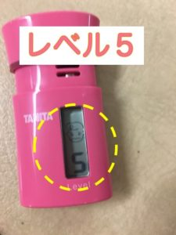
ちなみにレベル５は最低の生ゴミレベルということでした…
口臭には特に気をつけていたのですが、私の口臭ケアは、まったく効果なしということがわかったんです。
私がクサイ息を撒き散らしていたなんて…
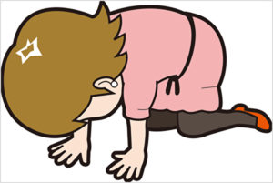
途方に暮れていたのですが、
ネットでたまたま知ったある方法で、
あっという間に！
劇的に口臭が消えたのです！
しかもかかった費用は、たったの500円！！
それが、石田純一さんが紹介していた口臭対策のブレッシュです。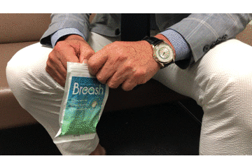口臭ケアのサプリを使うだけという、とても簡単な方法で、
即効性・持続性が高く、完全に口臭が消えると話題になっている口臭ケアです。
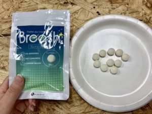
歯科業界で注目された口臭ケアらしく、ここ最近だと田中律子さんまでもが愛用しているようです。
使用してから1分後に計測したら、このとおり。
↓↓↓
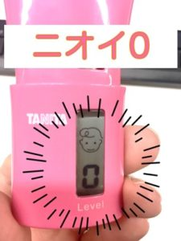
１分で無臭のゼロに！！
こんなに早く効果があらわれて、本当にびっくりしたので、調べたところ、
５００円のキャンペーンをきっかけに、
その効果が話題になり、
愛用者が急増しているらしいのです！
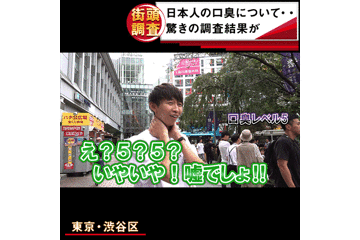
ネットの口コミを一部をご紹介させていただきます。
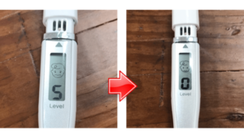
5歳の息子に「ママ、おばあちゃんのニオイがする」と言われてから、マウスウォッシュを常に愛用してましたが、効果を実感することがなく、話題のブレッシュを使ってみることに。本当に一瞬でニオイゼロになります！（emiさん / 37歳/ 女性）
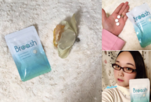
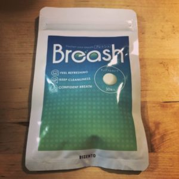
※公式サイトでは、さらに詳しく体験者の声が紹介されております。
↓↓↓
口臭の原因はハミガキでは解消出来ない！？
そもそも朝や夜に歯を磨いたり、マウスウォッシュをしても、
その効果は一時的で、すぐに臭ってきてしまうという人もいると思いますが、
それもそのはず。
口臭の原因は「歯」とは無関係なんです。
口が臭くなる代表的な原因は、『臭い玉』です。
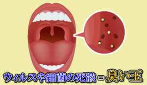
加齢によるドライマウスなどで口の中が乾燥すると、喉の奥にある扁桃（へんとう）に汚れが溜まり、タンパク質を餌した口内細菌が集まることで、臭い玉となってう●このような悪臭が発生！！
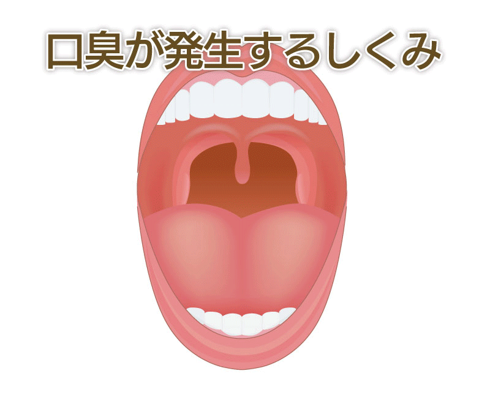しかも、細菌レベルの汚れはハミガキやマウスウォッシュでは取り除くことが出来ません。
さらに、舌の上にある舌苔（ぜったい）も口臭の原因の一つと言われております。
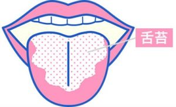
細菌レベルで細かくなった汚れが、舌の表面に溜まり
ドブ臭い悪臭が発生！！
同じくハミガキやマウスウォッシュでは取り除けないのです。
悪臭の汚れをクレンジング
ブレッシュが人気な理由は、その『即効性』です。
舌の上で転がし、舐めて食べるチュアブルタイプなので、口内にこびり付いた細菌レベルの汚れをキレイに削ぎ落とせるのです！
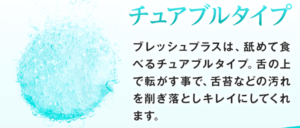
まさに口に入れた瞬間から、効果を発揮！
つまり、
口臭の原因に直接作用！
することで１分でニオイを消し去ることが出来るんです。

さらにタンパク質分解酵素も含まれているので、
タンパク質が口内細菌により分解され悪臭となる前に臭いの原因を除去出来るんです。
一時的な回復だけではないブレッシュの凄いところ
さらに！ブレッシュが人気な理由は、その『持続性』です。
カテキン・プロポリスといった抗菌成分が含まれており、
医療で使われる、うがい薬にも匹敵するレベルの抗菌パワーがあるため、臭いの原因に対して、
『即効性』と『持続性』がある口臭ケアが出来るんです。
またもう１つ口臭の原因が乱れた腸内環境です。
ストレスや加齢によって、カラダがサビていくと、腸内に蓄積した、悪玉菌によって腸内の悪臭ガスが、どんどん溜まっていきます。

そして、行き場を失った腸内ガスは血液循環によって、呼吸と一緒に排泄されていくのです。
また腸内の悪臭ガスは、汗などの老廃物と同時にも排出されるため、加齢臭の原因にもなると言われております。
しかし、ブレッシュには体内から臭ってくる蓄積臭も消してしまうデオアタックという成分も含まれているのです。
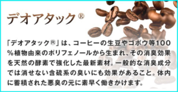
そのため、朝使用するだけで一日中口臭が気にならなくなります！
そのあまりの効果に、現役歯科医師も成分についてコメントをしている程です。
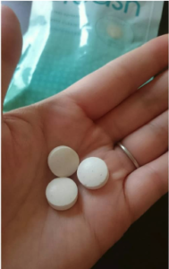
１分で無臭のゼロに！？
たったの５００円だったので、ブレッシュを早速注文！
一見何のサプリなのかわからないので、人目も気になりません。サプリタイプで、摂取しやすく簡単に持ち運び出来ます。
1分後には
もうこれなら安心！
口臭は、自分では気づけないし誰も教えてくれないのです。
あの時ちゃんと口臭対策しておけば…と後悔する前に、今すぐ出来ることを試してみてはいかがでしょうか？
今なら５００円！※このページ限定
大人気「ブレッシュ」ですが、すでにご紹介したとおり、
かなりオトクなキャンペーンやってます！
なんと今だけ、
1袋500円(税込) さらに送料無料！で購入出来るんです！
８７%OFFのチャンスは今だけ！
ちなみに某オークションサイトを確認したところ、軒並み３０００円以上なのに、売切れが続出しているほどでした。
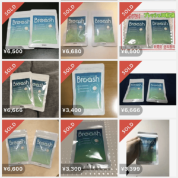
いまなら500円で手に入る大チャンスです！
さらに、定期縛り無し！
購入は１回だけでも大丈夫なんです。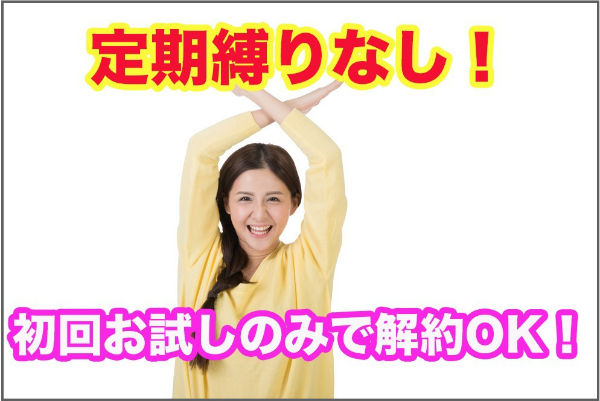
その上、30日間の返金保証付きなので、万が一効果が実感出来なかった場合でも安心ですね。
数量限定らしいので、気になっている方は、在庫がなくなる前に公式サイトをチェックしてみて下さいね。
↓↓↓
追記します！：本気で口臭対策したい人…急いで！！
※10/18追記します。
先程、ブレッシュの公式サイトを見たら、人気の影響で品薄状態になってると表示されてました。
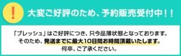
いま大人気の口臭ケアなので、もしかしらすぐに在庫切れになるかもしれません。
500円で買えるのは今だけなので、試すなら今がチャンスです！
※ボタンをクリックしてもページが表示されない場合は、キャンペーン終了ですm(_ _)m
↓↓↓
【私が実際に500円で購入した公式サイト】
＞＞＞公式サイトでお得にGETする
※500円で購入できるのはこのページからのみなので注意！